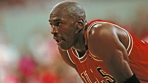
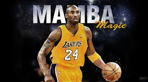

Kobe Bryant
Kobe Bean Bryant (August 23, 1978 – January 26, 2020) was an American professional basketball player. As a shooting guard, Bryant entered the National Basketball Association (NBA) directly from high school, and played his entire 20-season professional career in the league with the Los Angeles Lakers. Bryant won many accolades: five NBA championships, 18-time All-Star, 15-time member of the All-NBA Team, 12-time member of the All-Defensive Team, 2008 NBA Most Valuable Player (MVP), two-time NBA Finals MVP winner. Widely regarded as one of the greatest players of all time, he led the NBA in scoring during two seasons, ranks fourth on the league's all-time regular season scoring and all-time postseason scoring lists.
Bryant was the son of former NBA player Joe Bryant. He attended Lower Merion High School in Pennsylvania, where he was recognized as the top high-school basketball player in the country. Upon graduation, he declared for the 1996 NBA draft and was selected by the Charlotte Hornets with the 13th overall pick; the Hornets then traded him to the Lakers. As a rookie, Bryant earned himself a reputation as a high-flyer and a fan favorite by winning the 1997 Slam Dunk Contest, and he was named an All-Star by his second season. Despite a feud with teammate Shaquille O'Neal, the pair led the Lakers to three consecutive NBA championships from 2000 to 2002. In 2003, Bryant was accused of sexual assault by a 19-year-old hotel clerk.[7] Criminal charges were brought and then dropped after the accuser refused to testify, with a civil suit later settled out of court. Bryant denied the assault charge, but admitted to a sexual encounter and issued a public apology.
-

Jordan was a shooting guard who was also capable of playing as a small forward and as a point guard.
Read more >> -

LeBron Raymone James Sr. (born December 30, 1984) is an American professional basketball player
Read more >> -

Kobe Bean Bryant ( August 23, 1978 – January 26, 2020) was an American professional basketball
Read more >>